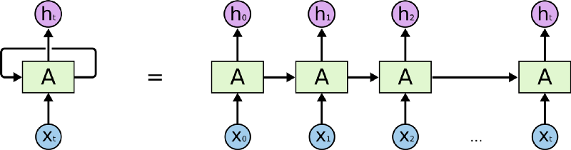
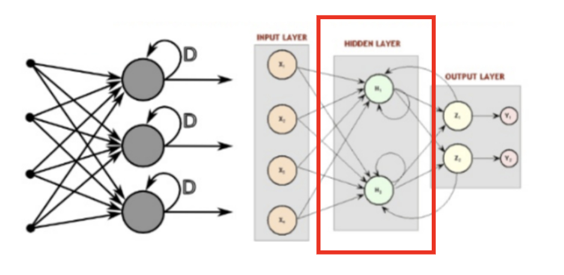
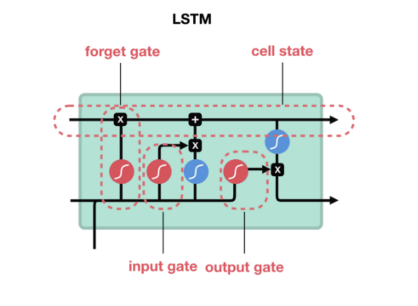

循環神經網路
Table of Contents
1. 遞迴類神經網路(Recurrent Neural Networks, RNNs)
RNN 能夠處理「任意個數的輸入序列」，所以十分適合用在「語言塑模」或「語音辨識」。理論上，RNN 可以用來處理任何問題，因為它已被證明具有「圖靈完備性」(Turing-Complete)。以遞迴關係的函數表示 RNN 可將其視為 \(S_t=f(S_{t-1},X_t)\)，這裡的\(S_t\)表示第\(t\)步的狀態，它是由函數\(f\)對上一步(\(t-1\))的狀態(即\(S_{t-1}\))與這一步的輸入\(X_t\)所計算出來的結果，這裡的函數\(f\)可以是任何可微分的函數，如\(S_t=tang(S_{t-1}*W+X_t*U)\)。
正因為每個狀態都會與之前所有的計算有關，其所代表的重要含義為：隨著時間的推移，RNNs 可以說是有記憶力的，因為狀態 S 包含了之前所有步驟的資訊。
語言塑模的目標是計算「字的序列」的機率，這在「語音辨識」、OCR、「機器翻譯」、「拼字校正」上都非常重要。以「字」為基準的「語言模型」是由「字的序列」來定義機率分佈，給定一個長度為\(m\)的字序列，它會為整個字序列給定一個機率\(P(w_1,...,w_m)\)，其「聯合機率」(joint probability)可以由公式\eqref{org5476c79}中的連鎖規則(chain rule)計算出來：
這個聯合機率一般是基於一個「獨立性假設」(independence assumption)，即，第 i 個字只會相依於它之前的 n-1 個字，如果我們的模型是連續 n 個字的聯合機率，就稱為「n元」(n-gram)。例：
- 1-gram / unigram: “The”, “quick”, “brown” and “fox”
- 2-grams / bigram: “The quick”, “quick brown” and “brown fox”
- 3-grams / trigram: “The quick brown” and “quick brown fox”
- 4-grams: “The quick brown fox”
現在，如果我們有一個巨大的語料庫(corpus of text)，我們就可以用一個特定的 n(通常為 2-4)搜尋所有「n元」在「語料庫」中出現的次數，進而在「給定前 n-1 個字的前提下」，估計出每個 n 元中最後一個字出現的機率。
2. RNN: Recurrent Neural Network，Recursive neural networks。
雖然很多時候我們把這兩種網絡都叫做RNN，但事實上這兩種網路的結構事實上是不同的。而我們常常把兩個網絡放在一起的原因是：它們都可以處理有序列的問題，比如時間序列等。
舉個最簡單的例子，我們預測股票走勢用RNN就比普通的DNN效果要好，原因是股票走勢和時間相關，今天的價格和昨天、上周、上個月都有關係。而RNN有「記憶」能力，可以「模擬」數據間的依賴關係(Dependency)。
2.1. LSTM:
為了加強這種RNN的「記憶能力」，人們開發各種各樣的變形體，如非常著名的Long Short-term Memory(LSTM)，用於解決「長期及遠距離的依賴關係」。如下圖所示，左邊的小圖是最簡單版本的循環網絡，而右邊是人們為了增強記憶能力而開發的LSTM。

Figure 1: LSTM
2.2. Bi-directional RNN:
另一個循環網絡的變種 - 雙向循環網絡(Bi-directional RNN)也是現階段自然語言處理和語音分析中的重要模型。開發雙向循環網絡的原因是語言/語音的構成取決於上下文，即「現在」依託於「過去」和「未來」。單向的循環網絡僅著重於從「過去」推出「現在」，而無法對「未來」的依賴性有效的建模。
3. RNN
RNN 是一種有「記憶力」的神經網路，其最為人所知的形式如下：

如同上圖等號左側所示，RNN 跟一般深度學習中常見的前饋神經網路（Feedforward Neural Network, 後簡稱 FFNN）最不一樣的地方在於它有一個迴圈（Loop）。
要了解這個迴圈在 RNN 裏頭怎麼運作，現在讓我們想像有一個輸入序列 X（Input Sequence）其長相如下：
\[ X = [ x_0, x_1, x_2, \dots x_t ]\]
- 不同於 FFNN，RNN 在第一個時間點 \(t_0\) 並不會直接把整個序列 \(X\) 讀入。反之，在第一個時間點 \(t_0\)，它只將該序列中的第一個元素 \(x_0\) 讀入中間的細胞 A。細胞 A 則會針對 \(x_0\) 做些處理以後，更新自己的「狀態」並輸出第一個結果 \(h_0\) 。
- 在下個時間點 \(t_1\)，RNN 如法炮製，讀入序列 \(X\) 中的下一個元素 \(x_1\)，並利用剛剛處理完 \(x_0\) 得到的細胞狀態，處理 \(x_1\) 並更新自己的狀態（也被稱為記憶），接著輸出另個結果 \(h_1\)。
- 剩下的 \(x_t\) 都會被以同樣的方式處理。但不管輸入的序列 \(X\) 有多長，RNN 的本體從頭到尾都是等號左邊的樣子：迴圈代表細胞 A 利用「上」一個時間點（比方說 \(t_1\)）儲存的狀態，來處理當下的輸入（比方說 \(x_2\) ）。
但如果你將不同時間點（\(t_0\), \(t_1\) …）的 RNN 以及它的輸入一起截圖，並把所有截圖從左到右一字排開的話，就會長得像等號右邊的形式。將 RNN 以右邊的形式表示的話，你可以很清楚地了解，當輸入序列越長，向右展開的 RNN 也就越長。（模型也就需要訓練更久時間，這也是為何我們在資料前處理時設定了序列的最長長度）
為了確保你 100 % 理解 RNN，讓我們假設剛剛的序列 X 實際上是一個內容如下的英文問句：
1: X = [ What, time, is, it, ? ]
而且 RNN 已經處理完前兩個元素 What 和 time 了。
則接下來 RNN 會這樣處理剩下的句子：

就像你現在閱讀這段話一樣，你是由左到右逐字在大腦裡處理我現在寫的文字，同時不斷地更新你腦中的記憶狀態。
每當下個詞彙映入眼中，你腦中的處理都會跟以下兩者相關：
- 前面所有已讀的詞彙
- 目前腦中的記憶狀態
當然，實際人腦的閱讀機制更為複雜，但 RNN抓到這個處理精髓，利用內在迴圈以及細胞內的「記憶狀態」來處理序列資料。
3.1. RNN實作
1: state_t = 0 2: for input_t in input_sequence: 3: output_t = f(input_t, state_t) 4: state_t = output_t
在 RNN 每次讀入任何新的序列數據前，細胞 A 中的記憶狀態 state_t 都會被初始化為 0。
接著在每個時間點 t，RNN 會重複以下步驟：
- 讀入 input_sequence 序列中的一個新元素 input_t
- 利用 f 函式將當前細胞的狀態 state_t 以及輸入 input_t 做些處理產生 output_t
- 輸出 output_t 並同時更新自己的狀態 state_t
在 Keras 裏頭只要 2 行就可以建立一個 RNN layer：
1: from keras import layers 2: rnn = layers.SimpleRNN()

Figure 2: RNN示例
3.2. LSTM
如下的簡易RNN
1: state_t = 0 2: # 細胞 A 會重複執行以下處理 3: for input_t in input_sequence: 4: output_t = f(input_t, state_t) 5: state_t = output_t
要如何將細胞 A 當下的記憶 state_t 與輸入 input_t 結合，才能產生最有意義的輸出 output_t 呢？
在 SimpleRNN 的細胞 A 裡頭，這個 f 的實作很簡單。而這導致其記憶狀態 state_t 沒辦法很好地「記住」前面處理過的序列元素，造成 RNN 在處理後來的元素時，就已經把前面重要的資訊給忘記了。(只有短期記憶，沒有長期記憶)
長短期記憶（Long Short-Term Memory, 後簡稱 LSTM）就是被設計來解決 RNN 的這個問題。如下圖所示，你可以把 LSTM 想成是 RNN 中用來實現細胞 A 內部處理邏輯的一個特定方法：

基本上一個 LSTM 細胞裡頭會有 3 個閘門（Gates）來控制細胞在不同時間點的記憶狀態：
- Forget Gate：決定細胞是否要遺忘目前的記憶狀態
- Input Gate：決定目前輸入有沒有重要到值得處理
- Output Gate：決定更新後的記憶狀態有多少要輸出
透過這些閘門控管機制，LSTM 可以將很久以前的記憶狀態儲存下來，在需要的時候再次拿出來使用。值得一提的是，這些閘門的參數也都是神經網路自己訓練出來的。

Figure 3: LSTM 細胞頂端那條 cell state 正代表著細胞記憶的轉換過程
想像 LSTM 細胞裡頭的記憶狀態是一個包裹，上面那條直線就代表著一個輸送帶。
LSTM 可以把任意時間點的記憶狀態（包裹）放上該輸送帶，然後在未來的某個時間點將其原封不動地取下來使用。

Figure 4: Caption
因為這樣的機制，讓 LSTM 即使面對很長的序列數據也能有效處理，不遺忘以前的記憶。
因為效果卓越，LSTM 非常廣泛地被使用。事實上，當有人跟你說他用 RNN 做了什麼 NLP 專案時，有 9 成機率他是使用 LSTM 或是 GRU（LSTM 的改良版，只使用 2 個閘門） 來實作，而不是使用最簡單的 SimpleRNN。